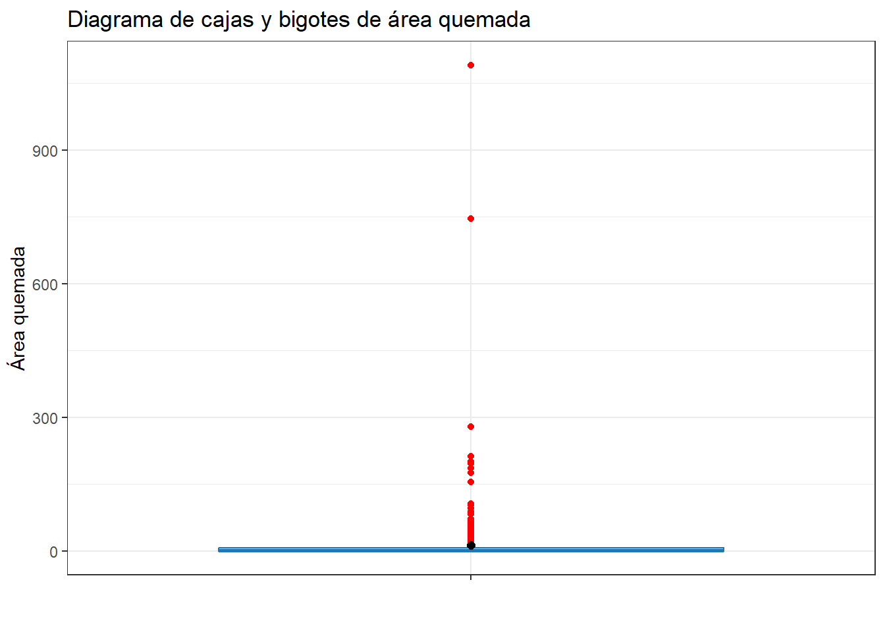
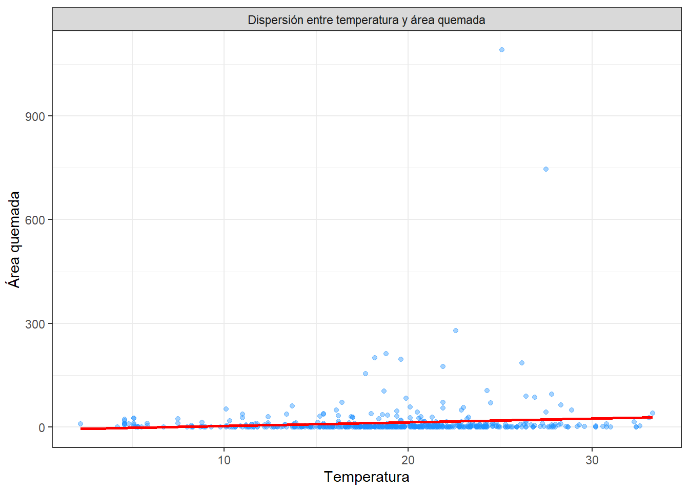

Chapter 2 Análisis Exploratorio de Datos (EDA)
2.1 Datos
## [1] 517 13## [1] "X" "Y" "month" "day" "FFMC" "DMC" "DC" "ISI" "temp"
## [10] "RH" "wind" "rain" "area"## tibble [517 × 13] (S3: tbl_df/tbl/data.frame)
## $ X : num [1:517] 7 7 7 8 8 8 8 8 8 7 ...
## $ Y : num [1:517] 5 4 4 6 6 6 6 6 6 5 ...
## $ month: chr [1:517] "mar" "oct" "oct" "mar" ...
## $ day : chr [1:517] "fri" "tue" "sat" "fri" ...
## $ FFMC : num [1:517] 86.2 90.6 90.6 91.7 89.3 92.3 92.3 91.5 91 92.5 ...
## $ DMC : num [1:517] 26.2 35.4 43.7 33.3 51.3 ...
## $ DC : num [1:517] 94.3 669.1 686.9 77.5 102.2 ...
## $ ISI : num [1:517] 5.1 6.7 6.7 9 9.6 14.7 8.5 10.7 7 7.1 ...
## $ temp : num [1:517] 8.2 18 14.6 8.3 11.4 22.2 24.1 8 13.1 22.8 ...
## $ RH : num [1:517] 51 33 33 97 99 29 27 86 63 40 ...
## $ wind : num [1:517] 6.7 0.9 1.3 4 1.8 5.4 3.1 2.2 5.4 4 ...
## $ rain : num [1:517] 0 0 0 0.2 0 0 0 0 0 0 ...
## $ area : num [1:517] 0 0 0 0 0 0 0 0 0 0 ...## # A tibble: 1 × 13
## X Y month day FFMC DMC DC ISI temp RH wind rain area
## <int> <int> <int> <int> <int> <int> <int> <int> <int> <int> <int> <int> <int>
## 1 0 0 0 0 0 0 0 0 0 0 0 0 0## Warning: Unknown or uninitialised column: `arguments`.
## Unknown or uninitialised column: `arguments`.## Warning: Unknown or uninitialised column: `imputations`.No hay datos faltantes
2.2 Análisis de la variable target (área)
La variable target, area, fue analizada a partir de 517 observaciones.
df %>%
summarise(n=length(area),
prom = mean(area),
ds = sd(area),
mediana = median(area),
RIC = IQR(area),
minimo = min(area),
maximo = max(area),
Q1 = quantile(area, 0.25),
Q3 = quantile(area, 0.75))## n prom ds mediana RIC minimo maximo Q1 Q3
## 1 517 12.84729 63.65582 0.52 6.57 0 1090.84 0 6.57df %>%
ggplot(aes(x=area)) +
geom_histogram(aes(y=after_stat(density))) +
geom_density(color="blue") +
theme_bw()## `stat_bin()` using `bins = 30`. Pick better value with `binwidth`. La variable area fue analizada a partir de 517 observaciones. Se obtuvo un promedio de área quemada de aproximadamente 12.85 hectáreas (DS = 63.66 hectáreas), donde el 50% de los incendios presentaron un área quemada inferior a 0.52 hectáreas. El mínimo registrado fue de 0.00 hectáreas, lo que podría indicar que en algunos casos no hubo quema, o se trata de datos nulos o errores en la medición. El máximo alcanzó las 1,090.84 hectáreas, lo que refleja una gran heterogeneidad en la magnitud de los incendios, con algunos casos extremos de áreas quemadas significativamente mayores a la media. Este comportamiento podría indicar que aunque la mayoría de los incendios tienen un área pequeña, existen eventos excepcionales que influyen considerablemente en la distribución de los datos
La variable area fue analizada a partir de 517 observaciones. Se obtuvo un promedio de área quemada de aproximadamente 12.85 hectáreas (DS = 63.66 hectáreas), donde el 50% de los incendios presentaron un área quemada inferior a 0.52 hectáreas. El mínimo registrado fue de 0.00 hectáreas, lo que podría indicar que en algunos casos no hubo quema, o se trata de datos nulos o errores en la medición. El máximo alcanzó las 1,090.84 hectáreas, lo que refleja una gran heterogeneidad en la magnitud de los incendios, con algunos casos extremos de áreas quemadas significativamente mayores a la media. Este comportamiento podría indicar que aunque la mayoría de los incendios tienen un área pequeña, existen eventos excepcionales que influyen considerablemente en la distribución de los datos
df %>%
ggplot(aes(x = "", y = area)) +
geom_boxplot(fill = "#a6cee3", color = "#1f78b4", outlier.color = "red") +
stat_summary(
fun = mean,
geom = "point",
shape = 20,
size = 3,
color = "black"
) +
labs(
title = "Diagrama de cajas y bigotes de área quemada",
x = "",
y = "Área quemada"
) +
theme_bw()
El diagrama de cajas y bigotes de la variable area revela que la mayoría de los incendios tienen áreas quemadas pequeñas, ya que la caja se concentra cerca de 0 hectáreas. La mediana se encuentra cerca de 0.57 hectáreas, lo que sugiere que la mitad de los incendios tienen áreas menores o iguales a este valor. Sin embargo, se observan varios valores atípicos representados por puntos rojos, que corresponden a incendios de gran magnitud, con áreas quemadas que alcanzan hasta 900 hectáreas o más. Esto indica una gran variabilidad en el tamaño de los incendios, con la mayoría de los casos siendo pequeños pero algunos eventos extremos que influyen en la distribución de los datos.
2.3 Variables independientes numéricas
ggplot(df, aes(x = X, y = Y, size = area)) +
geom_point(alpha = 0.5, color = "orange") +
scale_x_continuous(breaks = 1:9) +
scale_y_continuous(breaks = 1:9) +
theme_bw() +
labs(title = "Ubicación y magnitud de incendios")El gráfico de la frecuencia de incendios por coordenada muestra que los incendios están distribuidos en todo el bosque, aunque la mayoría afectan áreas pequeñas, lo que coincide con el fuerte sesgo observado en los datos. Se identifican algunos puntos con incendios de gran magnitud, concentrados principalmente entre las coordenadas X = 6–8 y Y = 4–6, lo que puede indicar zonas más propensas a daños. Sin embargo, no se evidencia una relación clara entre la ubicación (X, Y) y el tamaño del incendio, sino posibles regiones críticas donde los incendios tienden a ser más intensos o frecuentes.
df %>%
summarise(
n = length(FFMC),
media = mean(FFMC),
ds = sd(FFMC),
mediana = median(FFMC),
minimo = min(FFMC),
maximo = max(FFMC),
Q1 = quantile(FFMC, 0.25),
Q3 = quantile(FFMC, 0.75),
IQR = IQR(FFMC)) %>%
mutate(variable = "FFMC") -> ffmc
df %>%
summarise(
n = length(DMC),
media = mean(DMC),
ds = sd(DMC),
mediana = median(DMC),
minimo = min(DMC),
maximo = max(DMC),
Q1 = quantile(DMC, 0.25),
Q3 = quantile(DMC, 0.75),
IQR = IQR(DMC)) %>%
mutate(variable = "DMC") -> dmc
df %>%
summarise(
n = length(DC),
media = mean(DC),
ds = sd(DC),
mediana = median(DC),
minimo = min(DC),
maximo = max(DC),
Q1 = quantile(DC, 0.25),
Q3 = quantile(DC, 0.75),
IQR = IQR(DC)) %>%
mutate(variable = "DC")-> dc
df %>%
summarise(
n = length(ISI),
media = mean(ISI),
ds = sd(ISI),
mediana = median(ISI),
minimo = min(ISI),
maximo = max(ISI),
Q1 = quantile(ISI, 0.25),
Q3 = quantile(ISI, 0.75),
IQR = IQR(ISI)) %>%
mutate(variable = "ISI")-> isi
df %>%
summarise(
n = length(temp),
media = mean(temp),
ds = sd(temp),
mediana = median(temp),
minimo = min(temp),
maximo = max(temp),
Q1 = quantile(temp, 0.25),
Q3 = quantile(temp, 0.75),
IQR = IQR(temp)) %>%
mutate(variable = "temp")-> temp
df %>%
summarise(
n = length(RH),
media = mean(RH),
ds = sd(RH),
mediana = median(RH),
minimo = min(RH),
maximo = max(RH),
Q1 = quantile(RH, 0.25),
Q3 = quantile(RH, 0.75),
IQR = IQR(RH)) %>%
mutate(variable = "RH")-> rh
df %>%
summarise(
n = length(wind),
media = mean(wind),
ds = sd(wind),
mediana = median(wind),
minimo = min(wind),
maximo = max(wind),
Q1 = quantile(wind, 0.25),
Q3 = quantile(wind, 0.75),
IQR = IQR(wind)) %>%
mutate(variable = "wind")-> wind
df %>%
summarise(
n = length(rain),
media = mean(rain),
ds = sd(rain),
mediana = median(rain),
minimo = min(rain),
maximo = max(rain),
Q1 = quantile(rain, 0.25),
Q3 = quantile(rain, 0.75),
IQR = IQR(rain)) %>%
mutate(variable = "rain")-> rain## variable n media ds mediana minimo maximo Q1 Q3 IQR
## 1 FFMC 517 90.64468085 5.5201108 91.6 18.7 96.2 90.2 92.9 2.7
## 2 DMC 517 110.87234043 64.0464822 108.3 1.1 291.3 68.6 142.4 73.8
## 3 DC 517 547.94003868 248.0661917 664.2 7.9 860.6 437.7 713.9 276.2
## 4 ISI 517 9.02166344 4.5594772 8.4 0.0 56.1 6.5 10.8 4.3
## 5 temp 517 18.88916828 5.8066253 19.3 2.2 33.3 15.5 22.8 7.3
## 6 RH 517 44.28820116 16.3174692 42.0 15.0 100.0 33.0 53.0 20.0
## 7 wind 517 4.01760155 1.7916526 4.0 0.4 9.4 2.7 4.9 2.2
## 8 rain 517 0.02166344 0.2959591 0.0 0.0 6.4 0.0 0.0 0.0FFMC: La media de FFMC es 90.64 (DS = 5.52), con una mediana de 91.6 y un rango entre 18.7 y 96.2. La mayoría de los valores se concentran en el rango medio, pero se observan algunas variaciones extremas, lo que sugiere que el índice de riesgo de fuego en la mayoría de los casos es moderado, con algunos eventos de mayor intensidad.
DMC: La media de DMC es 110.87 (DS = 64.04), con una mediana de 108.3 y un rango entre 1.1 y 291.3. El índice presenta una gran dispersión, lo que indica que los incendios pueden estar asociados con una amplia variedad de condiciones meteorológicas y de vegetación.
DC: Con una media de 547.94 (DS = 488.07), DC tiene una mediana de 664.2 y un rango que varía entre 7.9 y 860.6. Este índice también muestra una amplia dispersión, sugiriendo que los incendios pueden estar relacionados con condiciones muy variables de humedad y combustibilidad de la vegetación.
ISI: La media de ISI es 9.02 (DS = 4.56), con una mediana de 8.4 y un rango entre 0.0 y 56.1. Este índice de severidad de incendios muestra una mayor concentración en los valores bajos, con algunas observaciones extremas que podrían reflejar condiciones extremadamente severas de riesgo de incendio.
temp: La media de temperatura es 18.89°C (DS = 5.81), con una mediana de 19.3°C y un rango entre 2.3°C y 33.5°C. La temperatura muestra una distribución relativamente uniforme, pero con algunos valores extremos, lo que puede influir en la propagación de los incendios.
RH: La media de humedad relativa es 42.0% (DS = 16.32), con una mediana de 42.0% y un rango de 15.0% a 100%. Los valores extremos en la humedad relativa pueden indicar que ciertos incendios ocurren en condiciones de muy baja humedad o, en algunos casos, de alta humedad, lo que puede afectar la velocidad de propagación del fuego.
wind: La media de la velocidad del viento es 4.01 km/h (DS = 1.79), con una mediana de 4.0 km/h y un rango de 0.4 a 9.4 km/h. La mayoría de las observaciones son valores moderados de viento, aunque los valores extremos más altos podrían representar condiciones favorables para la propagación rápida de los incendios.
rain: La media de lluvia es muy baja, 0.02 mm/m² (DS = 0.30), con una mediana de 0.0 mm/m² y un rango entre 0.0 y 6.4 mm/m². La lluvia tiene una concentración en valores muy bajos, lo que indica que la lluvia tiene poca influencia en la extinción de incendios, siendo la variable menos relevante en la mitigación de incendios.
box_plot_var <- function(data, var, titulo, ylab) {
ggplot(data, aes(x = "", y = !!sym(var))) +
geom_boxplot(fill = "#a6cee3", color = "#1f78b4", outlier.color = "red") +
stat_summary(fun = mean, geom = "point", shape = 20, size = 3, color = "black") +
labs(title = titulo, x = "", y = ylab) +
theme_bw()
}
# Crear cada gráfico
p1 <- box_plot_var(df, "FFMC", "FFMC", "Índice FFMC")
p2 <- box_plot_var(df, "DMC", "DMC", "Índice DMC")
p3 <- box_plot_var(df, "DC", "DC", "Índice DC")
p4 <- box_plot_var(df, "ISI", "ISI", "ISI")
p5 <- box_plot_var(df, "temp", "temp", "Temperatura")
p6 <- box_plot_var(df, "RH", "RH", "RH")
p7 <- box_plot_var(df, "wind", "wind", "Viento")
p8 <- box_plot_var(df, "rain", "rain", "Lluvia")
p9 <- box_plot_var(df, "X", "X", "Coord. X")
p10 <- box_plot_var(df, "Y", "Y", "Coord. Y")
# Juntar todo en una sola imagen
(p1 | p2 | p3 | p4 | p9) /
(p5 | p6 | p7 | p8 | p10)Los gráficos de cajas y bigotes muestran que la mayoría de los incendios forestales en la región ocurren bajo condiciones moderadas, con índices de riesgo de incendio (FFMC, DMC, DC, ISI) concentrados en valores medios, pero con algunos valores atípicos que indican eventos extremos. La temperatura presenta una distribución relativamente uniforme, aunque con algunas temperaturas altas que pueden favorecer la propagación del fuego, mientras que la humedad relativa varía entre valores bajos y altos, lo que puede influir en la intensidad del incendio. El viento tiene una distribución centrada en valores bajos, pero algunos picos extremos sugieren que en ciertos casos el viento puede acelerar la propagación. Finalmente, la lluvia es muy poco frecuente y no parece tener un impacto significativo en la extinción de incendios. Estos patrones reflejan que, aunque las condiciones en la mayoría de los casos son moderadas, los eventos extremos pueden generar situaciones de alto riesgo para los incendios.
2.4 Variables independientes categóricas
df$month <- factor(df$month,
levels = c("jan", "feb", "mar", "apr", "may", "jun",
"jul", "aug", "sep", "oct", "nov", "dec"))
tabla_month <- df %>%
count(month, name="Frecuencia") %>%
mutate(
Porcentaje = round(
(Frecuencia/sum(Frecuencia))*100,1),
Etiqueta = paste0(Frecuencia, " (",Porcentaje,"%)"))g_mes <- ggplot(tabla_month, aes(x = month, y = Frecuencia)) +
geom_col(fill = "#A0ABFF", width = 0.6) +
geom_text(aes(label = Etiqueta), vjust = -0.5, size = 3) +
facet_wrap(~ "Distribución de la variable month") +
scale_y_continuous(expand = expansion(mult = c(0, 0.15))) +
labs(x = "Mes del año", y = "Frecuencia (Porcentaje)") +
theme_bw(base_size = 8) +
theme(
plot.title = element_blank(),
strip.background = element_rect(fill = "gray80", color = NA),
strip.text = element_text(face = "bold"),
panel.grid.major.x = element_blank()
)df$day <- factor(df$day,
levels = c("mon", "tue", "wed", "thu", "fri", "sat", "sun"))
tabla_day <- df %>%
count(day, name="Frecuencia") %>%
mutate(
Porcentaje = round(
(Frecuencia/sum(Frecuencia))*100,1),
Etiqueta = paste0(Frecuencia, " (",Porcentaje,"%)"))g_dia <- ggplot(tabla_day, aes(x = day, y = Frecuencia)) +
geom_col(fill = "#A0ABFF", width = 0.6) +
geom_text(aes(label = Etiqueta), vjust = -0.5, size = 3) +
facet_wrap(~ "Distribución de la variable day") +
scale_y_continuous(expand = expansion(mult = c(0, 0.15))) +
labs(x = "Día de la semana", y = "Frecuencia (Porcentaje)") +
theme_bw(base_size = 8) +
theme(
plot.title = element_blank(),
strip.background = element_rect(fill = "gray80", color = NA),
strip.text = element_text(face = "bold"),
panel.grid.major.x = element_blank()
) Ambos gráficos dan información valiosa, pero el de la variable month es más relevante para el estudio, ya que muestra una clara estacionalidad en los incendios, con un aumento significativo en los meses agosto y septiembre, lo cual es crucial para predecir y gestionar los incendios en función de las condiciones climáticas estacionales. El gráfico de la variable day, aunque útil, refleja una distribución menos clara y podría ser más relevante si se exploran factores específicos como el comportamiento humano o actividades más comunes en ciertos días.
Ambos gráficos dan información valiosa, pero el de la variable month es más relevante para el estudio, ya que muestra una clara estacionalidad en los incendios, con un aumento significativo en los meses agosto y septiembre, lo cual es crucial para predecir y gestionar los incendios en función de las condiciones climáticas estacionales. El gráfico de la variable day, aunque útil, refleja una distribución menos clara y podría ser más relevante si se exploran factores específicos como el comportamiento humano o actividades más comunes en ciertos días.
2.5 Análisis bivariado num vs num
df %>%
ggplot(aes(x = FFMC, y = area)) +
geom_point(alpha = 0.4, color = "#1E90FF") +
geom_smooth(method = "lm", formula = y ~ x, se = FALSE, color = "red") +
labs(x = "FFMC",
y = "Área quemada"
) +
theme_bw()+
facet_grid(.~ "Dispersión entre FFMC y área quemada")El gráfico de dispersión muestra una relación positiva entre el FFMC (Índice de riesgo de incendio) y el área quemada. A medida que el valor de FFMC aumenta, también lo hace el área quemada, lo que indica que a mayores valores de FFMC, que representan un mayor riesgo de incendio, se asocia con un aumento en el tamaño del área quemada. Sin embargo, la relación no es perfecta, ya que existen muchos valores dispersos, especialmente en los valores más altos de FFMC, lo que sugiere que otros factores también influyen en el tamaño del área afectada por el fuego. La línea de regresión roja muestra esta tendencia ascendente, confirmando una correlación moderada entre ambas variables, pero con una gran variabilidad en los datos.
df %>%
ggplot(aes(x = DMC, y = area)) +
geom_point(alpha = 0.4, color = "#1E90FF") +
geom_smooth(method = "lm", formula = y ~ x, se = FALSE, color = "red") +
labs(x = "DMC",
y = "Área quemada"
) +
theme_bw()+
facet_grid(.~ "Dispersión entre DMC y área quemada") Los gráficos de dispersión entre FFMC y el área quemada, así como entre DMC y el área quemada, muestran una relación positiva entre ambas variables. A medida que el valor de FFMC y DMC aumentan, también lo hace el área quemada, lo que indica que un mayor riesgo de incendio, reflejado en mayores valores de estos índices, está asociado con un aumento en el tamaño del área afectada por el fuego. Sin embargo, ambos gráficos muestran una dispersión considerable, especialmente en los valores bajos de ambos índices, lo que sugiere que, aunque estos factores son importantes, otros como la temperatura, el viento o la humedad también influyen en la extensión del área quemada. La línea de regresión en ambos gráficos confirma la tendencia ascendente, pero la variabilidad en los datos indica que estos factores por sí solos no explican completamente el tamaño de los incendios
Los gráficos de dispersión entre FFMC y el área quemada, así como entre DMC y el área quemada, muestran una relación positiva entre ambas variables. A medida que el valor de FFMC y DMC aumentan, también lo hace el área quemada, lo que indica que un mayor riesgo de incendio, reflejado en mayores valores de estos índices, está asociado con un aumento en el tamaño del área afectada por el fuego. Sin embargo, ambos gráficos muestran una dispersión considerable, especialmente en los valores bajos de ambos índices, lo que sugiere que, aunque estos factores son importantes, otros como la temperatura, el viento o la humedad también influyen en la extensión del área quemada. La línea de regresión en ambos gráficos confirma la tendencia ascendente, pero la variabilidad en los datos indica que estos factores por sí solos no explican completamente el tamaño de los incendios
df %>%
ggplot(aes(x = DC, y = area)) +
geom_point(alpha = 0.4, color = "#1E90FF") +
geom_smooth(method = "lm", formula = y ~ x, se = FALSE, color = "red") +
labs(x = "DMC",
y = "Área quemada"
) +
theme_bw()+
facet_grid(.~ "Dispersión entre DC y área quemada")El gráfico de dispersión muestra una relación positiva entre el DC y el área quemada. A medida que el valor de DC aumenta, también lo hace el área quemada, lo que sugiere que cuando la vegetación se encuentra en un estado más seco (mayores valores de DC), hay una mayor probabilidad de que los incendios afecten áreas más grandes. La línea de regresión roja muestra una relación ascendente, indicando que el índice DC tiene una correlación moderada con el tamaño del área quemada. Sin embargo, como en los otros gráficos, existe una gran dispersión en los datos, especialmente en los valores bajos de DC, donde el área quemada es principalmente pequeña o nula. Esto sugiere que, aunque DC es un factor importante, otros factores como la temperatura, el viento o la humedad también juegan un papel crucial en la propagación de los incendios.
df %>%
ggplot(aes(x = ISI, y = area)) +
geom_point(alpha = 0.4, color = "#1E90FF") +
geom_smooth(method = "lm", formula = y ~ x, se = FALSE, color = "red") +
labs(x = "ISI",
y = "Área quemada"
) +
theme_bw()+
facet_grid(.~ "Dispersión entre ISI y área quemada") El gráfico de dispersión muestra que no existe una relación clara entre el ISI y el área quemada. A pesar de que el ISI refleja un mayor riesgo de incendio, la dispersión de los puntos es amplia y no muestra una tendencia clara, como sí ocurre en otros gráficos. La línea de regresión roja casi horizontal sugiere que, a pesar de los valores más altos del índice, no se observa un aumento significativo en el área quemada. Esto indica que el ISI no está siendo un predictor fuerte del tamaño del área quemada, y otros factores, como la humedad, el viento o la vegetación, podrían estar jugando un papel más importante en la extensión de los incendios.
El gráfico de dispersión muestra que no existe una relación clara entre el ISI y el área quemada. A pesar de que el ISI refleja un mayor riesgo de incendio, la dispersión de los puntos es amplia y no muestra una tendencia clara, como sí ocurre en otros gráficos. La línea de regresión roja casi horizontal sugiere que, a pesar de los valores más altos del índice, no se observa un aumento significativo en el área quemada. Esto indica que el ISI no está siendo un predictor fuerte del tamaño del área quemada, y otros factores, como la humedad, el viento o la vegetación, podrían estar jugando un papel más importante en la extensión de los incendios.
df %>%
ggplot(aes(x = temp, y = area)) +
geom_point(alpha = 0.4, color = "#1E90FF") +
geom_smooth(method = "lm", formula = y ~ x, se = FALSE, color = "red") +
labs(x = "Temperatura",
y = "Área quemada"
) +
theme_bw()+
facet_grid(.~ "Dispersión entre temperatura y área quemada") El gráfico de dispersión muestra una relación positiva débil entre Temperatura y el área quemada. A medida que la temperatura aumenta, también lo hace el área quemada, lo que indica que a temperaturas más altas, es más probable que los incendios afecten áreas mayores. Sin embargo, la dispersión de los puntos es considerable, lo que sugiere que la temperatura no es el único factor que influye en la magnitud de los incendios. La línea de regresión roja confirma la tendencia ascendente, pero la dispersión muestra que otros factores, como la humedad, el viento o el tipo de vegetación, también juegan un papel importante en la extensión de los incendios. En resumen, aunque la temperatura parece tener un efecto en el área quemada, su influencia es moderada comparada con otros factores.
df %>%
ggplot(aes(x = RH, y = area)) +
geom_point(alpha = 0.4, color = "#1E90FF") +
geom_smooth(method = "lm", formula = y ~ x, se = FALSE, color = "red") +
labs(x = "Humedad relativa",
y = "Área quemada"
) +
theme_bw()+
facet_grid(.~ "Dispersión entre RH y área quemada")El gráfico de dispersión muestra una relación negativa muy débil entre Humedad Relativa (RH) y el área quemada. A medida que la humedad relativa aumenta, el área quemada tiende a disminuir ligeramente, lo que sugiere que a mayores niveles de humedad, los incendios tienden a ser más pequeños o menos frecuentes. Sin embargo, la dispersión de los puntos es considerable y la línea de regresión roja casi horizontal confirma que no existe una correlación fuerte entre estas dos variables. Esto indica que, aunque la humedad relativa podría tener algún impacto en la propagación de los incendios, otros factores como la temperatura, el viento o el tipo de vegetación parecen influir de manera más significativa en la extensión del área quemada.
df %>%
ggplot(aes(x = rain, y = area)) +
geom_point(alpha = 0.4, color = "#1E90FF") +
geom_smooth(method = "lm", formula = y ~ x, se = FALSE, color = "red") +
labs(x = "Lluvia",
y = "Área quemada"
) +
theme_bw()+
facet_grid(.~ "Dispersión entre lluvia y área quemada") El gráfico de dispersión muestra una relación positiva muy débil entre Lluvia y el área quemada. La mayoría de los puntos se concentran cerca de 0 mm de lluvia, lo que indica que en la mayoría de los incendios no hubo precipitaciones significativas. A medida que la cantidad de lluvia aumenta, también lo hace el área quemada, pero esta relación es débil y con pocos puntos de datos, lo que sugiere que la lluvia no es un factor determinante en la extensión de los incendios. La línea de regresión roja confirma una tendencia ascendente, pero debido a la baja frecuencia de lluvias y la dispersión de los puntos, podemos concluir que la lluvia tiene un impacto mínimo en la propagación de los incendios en esta región
El gráfico de dispersión muestra una relación positiva muy débil entre Lluvia y el área quemada. La mayoría de los puntos se concentran cerca de 0 mm de lluvia, lo que indica que en la mayoría de los incendios no hubo precipitaciones significativas. A medida que la cantidad de lluvia aumenta, también lo hace el área quemada, pero esta relación es débil y con pocos puntos de datos, lo que sugiere que la lluvia no es un factor determinante en la extensión de los incendios. La línea de regresión roja confirma una tendencia ascendente, pero debido a la baja frecuencia de lluvias y la dispersión de los puntos, podemos concluir que la lluvia tiene un impacto mínimo en la propagación de los incendios en esta región
df %>%
ggplot(aes(x = wind, y = area)) +
geom_point(alpha = 0.4, color = "#1E90FF") +
geom_smooth(method = "lm", formula = y ~ x, se = FALSE, color = "red") +
labs(x = "Viento",
y = "Área quemada"
) +
theme_bw()+
facet_grid(.~ "Dispersión entre viento y área quemada") El gráfico de dispersión muestra una relación positiva moderada entre Viento y el área quemada. A medida que la velocidad del viento aumenta, también tiende a aumentar el área quemada, lo que sugiere que el viento puede tener un impacto en la propagación de los incendios, acelerando su expansión. La línea de regresión roja confirma esta tendencia ascendente, lo que indica que el viento es un factor que, aunque no es el único determinante, parece jugar un papel en la extensión del área afectada por el fuego. Sin embargo, la dispersión de los puntos muestra que hay mucha variabilidad, por lo que no solo el viento influye en la magnitud del incendio, sino que otros factores como la temperatura, la humedad y la vegetación también deben ser considerados.
El gráfico de dispersión muestra una relación positiva moderada entre Viento y el área quemada. A medida que la velocidad del viento aumenta, también tiende a aumentar el área quemada, lo que sugiere que el viento puede tener un impacto en la propagación de los incendios, acelerando su expansión. La línea de regresión roja confirma esta tendencia ascendente, lo que indica que el viento es un factor que, aunque no es el único determinante, parece jugar un papel en la extensión del área afectada por el fuego. Sin embargo, la dispersión de los puntos muestra que hay mucha variabilidad, por lo que no solo el viento influye en la magnitud del incendio, sino que otros factores como la temperatura, la humedad y la vegetación también deben ser considerados.
2.6 Análisis bivariado num vs cat
# Agrupación por "month"
agrup_month <- df %>%
group_by(month) %>%
summarise(n = length(area),
media = mean(area),
ds = sd(area),
mediana = median(area),
minimo = min(area),
maximo = max(area),
Q1 = quantile(area, 0.25),
Q3 = quantile(area, 0.75),
IQR = IQR(area)) %>%
mutate(variable = "month", niveles = as.character(month)) %>%
select(variable, niveles, everything(), -month)
g1 <- df %>%
ggplot(aes(x = month, y = area)) +
geom_boxplot(fill = "#87CEFA", outlier.colour = "red", outlier.shape = 16) +
stat_summary(fun = mean, geom = "point", shape = 18, size = 3, color = "darkblue") +
labs(x = "Mes del año", y = "Área quemada") +
theme_bw() +
facet_grid(.~"Distribución de área quemada por meses del año")agrup_day <- df %>%
group_by(day) %>%
summarise(n = length(area),
media = mean(area),
ds = sd(area),
mediana = median(area),
minimo = min(area),
maximo = max(area),
Q1 = quantile(area, 0.25),
Q3 = quantile(area, 0.75),
IQR = IQR(area)) %>%
mutate(variable = "day", niveles = as.character(day)) %>%
select(variable, niveles, everything(), -day)
g2 <- df %>%
ggplot(aes(x = day, y = area)) +
geom_boxplot(fill = "#87CEFA", outlier.colour = "red", outlier.shape = 16) +
stat_summary(fun = mean, geom = "point", shape = 18, size = 3, color = "darkblue") +
labs(x = "Días de la semana", y = "Área quemada") +
theme_bw() +
facet_grid(.~"Distribución de área quemada por día de la semana")## # A tibble: 19 × 11
## variable niveles n media ds mediana minimo maximo Q1 Q3 IQR
## <chr> <chr> <int> <dbl> <dbl> <dbl> <dbl> <dbl> <dbl> <dbl> <dbl>
## 1 month jan 2 0 0 0 0 0 0 0 0
## 2 month feb 20 6.28 12.3 0.55 0 51.8 0 6.50 6.50
## 3 month mar 54 4.36 9.14 0 0 36.8 0 3.02 3.02
## 4 month apr 9 8.89 19.9 0 0 61.1 0 4.61 4.61
## 5 month may 2 19.2 27.2 19.2 0 38.5 9.62 28.9 19.2
## 6 month jun 17 5.84 16.9 0 0 70.3 0 3.19 3.19
## 7 month jul 32 14.4 50.8 1.04 0 279. 0 6.37 6.37
## 8 month aug 184 12.5 60.4 0.545 0 746. 0 5.03 5.03
## 9 month sep 172 17.9 87.6 1.36 0 1091. 0 7.56 7.56
## 10 month oct 15 6.64 13.7 0 0 49.4 0 6.14 6.14
## 11 month nov 1 0 NA 0 0 0 0 0 0
## 12 month dec 9 13.3 6.61 10.7 5.38 24.8 9.27 17.8 8.58
## 13 day mon 74 9.55 33.7 0.745 0 279. 0 6.03 6.03
## 14 day tue 64 12.6 33.6 0.655 0 213. 0 8.85 8.85
## 15 day wed 54 10.7 30.3 0.76 0 186. 0 5.78 5.78
## 16 day thu 61 16.3 95.4 0.9 0 746. 0 4.95 4.95
## 17 day fri 85 5.26 10.0 0.33 0 43.3 0 5.97 5.97
## 18 day sat 84 25.5 123. 0.34 0 1091. 0 7.55 7.55
## 19 day sun 95 10.1 26.1 0 0 196. 0 6.82 6.82 La distribución de área quemada por meses del año muestra una clara concentración de incendios durante los meses de junio, julio y agosto, que coinciden con el verano, cuando las condiciones climáticas favorecen la propagación del fuego. Aunque la distribución por días de la semana también es interesante, ya que muestra una mayor actividad los viernes y domingo, la estacionalidad en los meses del año tiene un impacto más directo y significativo en la extensión de los incendios, lo que es crucial para predecir y gestionar los incendios forestales en función de las condiciones climáticas.
La distribución de área quemada por meses del año muestra una clara concentración de incendios durante los meses de junio, julio y agosto, que coinciden con el verano, cuando las condiciones climáticas favorecen la propagación del fuego. Aunque la distribución por días de la semana también es interesante, ya que muestra una mayor actividad los viernes y domingo, la estacionalidad en los meses del año tiene un impacto más directo y significativo en la extensión de los incendios, lo que es crucial para predecir y gestionar los incendios forestales en función de las condiciones climáticas.
2.7 Conclusiones EDA
El área quemada sigue un patrón de pocos incendios grandes entre muchísimos pequeños, donde aproximadamente más del 75% de los registros tienen un área quemada menor a 5 hectáreas, influenciado por clima, índices de combustible y época del año, el análisis del área quemada en los incendios forestales en el bosque Montesinho revela un comportamiento altamente sesgado y con distribución desigual. Inicialmente se evidencia una relación con las variables del índice FFMC, con valores más acumulados hacia la derecha, y la época del año, siendo agosto y septiembre, por mucho, los meses con más frecuencia de incendios forestales.